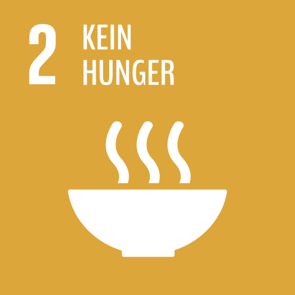

Noch immer hungern 795 Millionen Menschen, zwei Milliarden Menschen sind mangelernährt. Hunger ist nicht nur das größte Gesundheitsrisiko, sondern auch eines der größten Entwicklungshemmnisse. Er trägt zu Flucht und Vertreibung bei, fördert Perspektivlosigkeit und Gewalt.
Es werden heute genügend Nahrungsmittel auf der Welt produziert, um allen Menschen eine ausreichende Ernährung zu sichern. Allerdings haben auf Grund von mangelnder Infrastruktur, Handelsbarrieren und bewaffneten Konflikten nicht alle Menschen den gleichen Zugang zu Nahrung.
„Die Weltlandwirtschaft könnte problemlos 12 Milliarden Menschen ernähren. Das heißt, ein Kind, das heute an Hunger stirbt, wird ermordet.“
(Jean Ziegler, ehemaliger UN-Sonderberichterstatter für das Recht auf Nahrung)
